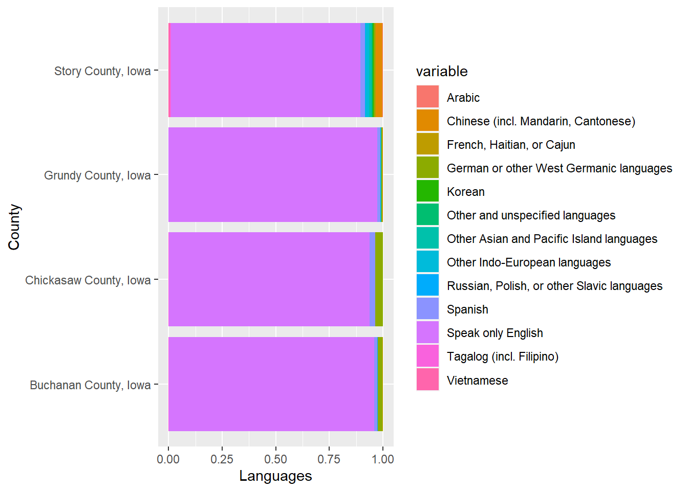
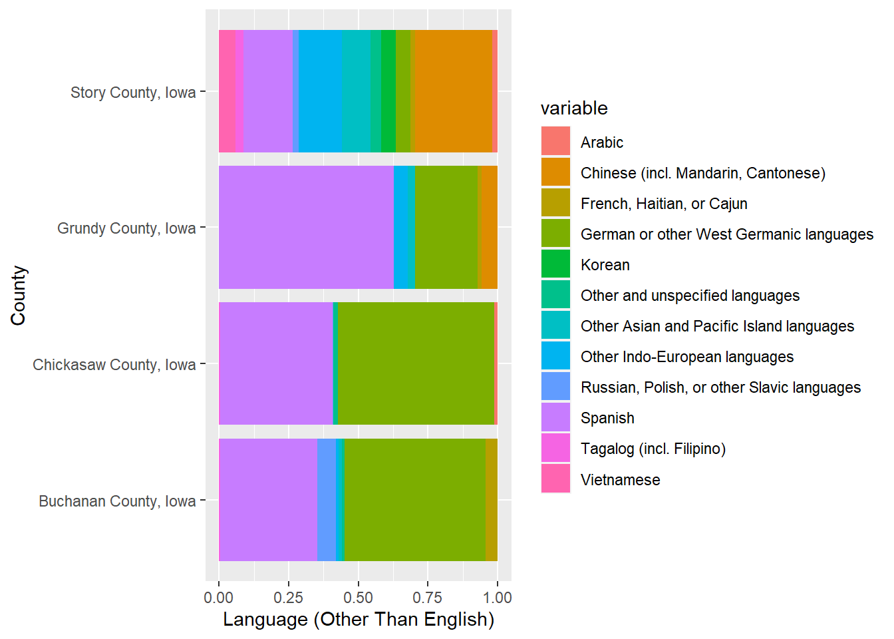
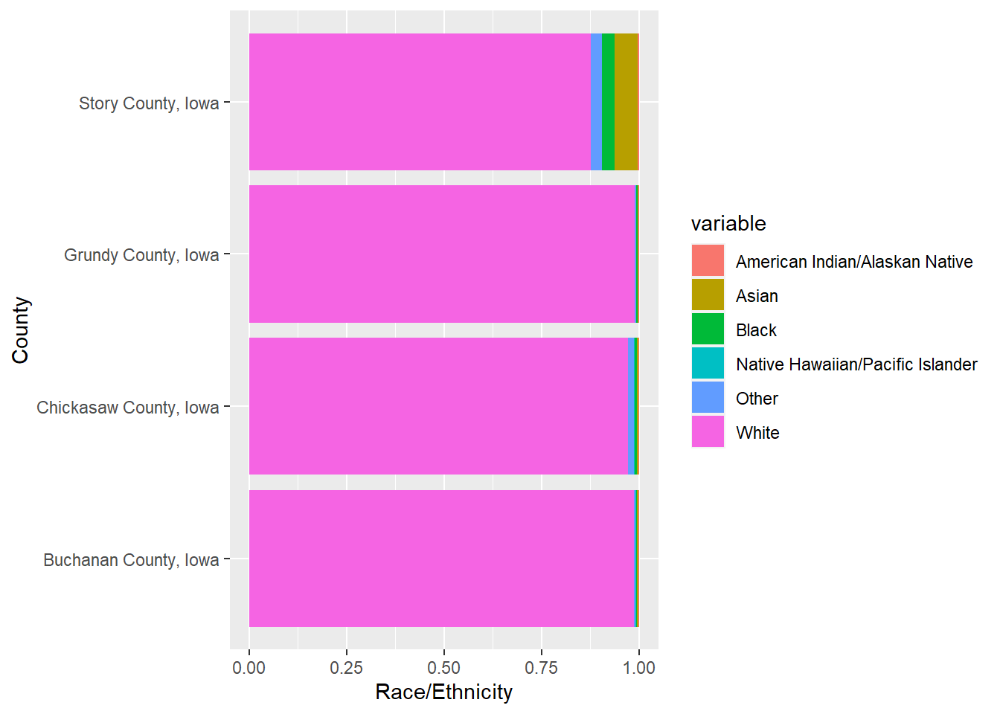
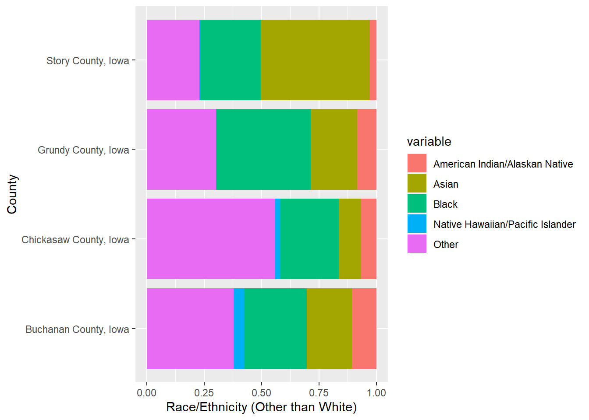
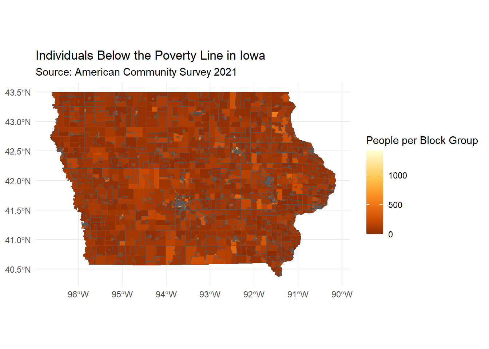
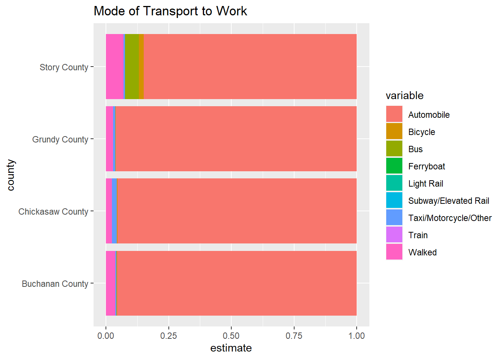
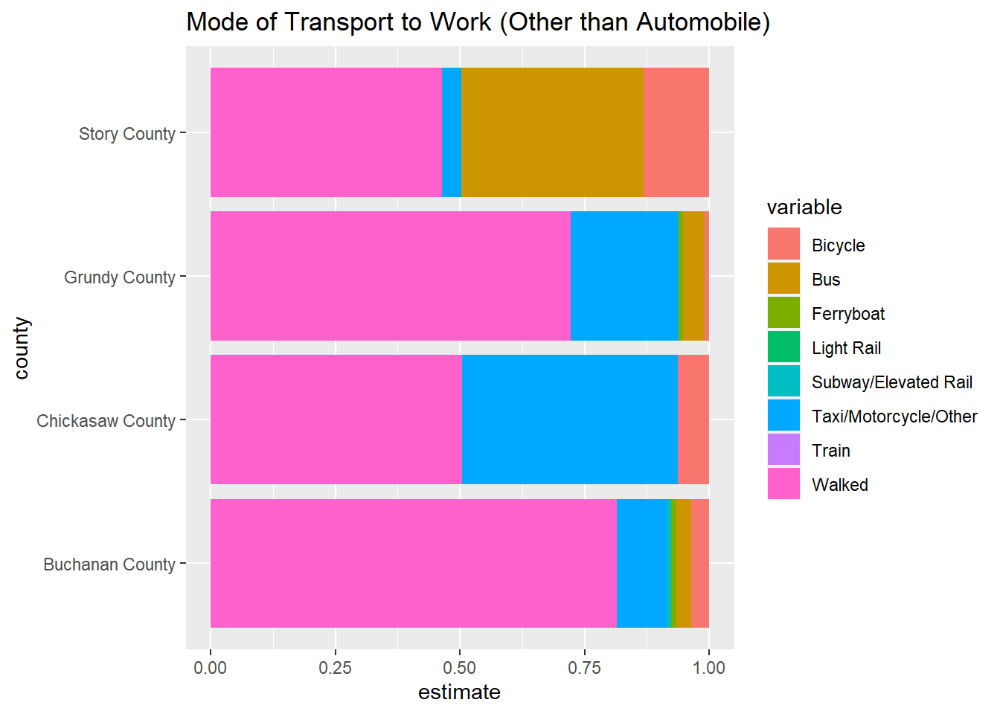

Using the PL 94-171 Redistricting Data summary file
Note: 2020 decennial Census data use differential privacy, a technique that
introduces errors into data to preserve respondent confidentiality.
ℹ Small counts should be interpreted with caution.
ℹ See https://www.census.gov/library/fact-sheets/2021/protecting-the-confidentiality-of-the-2020-census-redistricting-data.html for additional guidance.
This message is displayed once per session.
This is a graph representing the percentage of vacant housing units per location for both the counties and their respective cities. Slater City has the lowest percentage of vacancies while New Hampton City has the highest.
I then looked at median earnings within the last 12 months:
This graph represents the median of individuals’ earnings within the last 12 months by county. Grundy County reports the highest while Buchanan County reports the lowest.
Then I looked at the different languages spoken in each county:
# List of language variables (provided by Chris Seeger)langList =c("Speak only English"="C16001_002", "Spanish"="C16001_003", "French, Haitian, or Cajun"="C16001_006", "German or other West Germanic languages"="C16001_009", "Russian, Polish, or other Slavic languages"="C16001_012", "Other Indo-European languages"="C16001_015", "Korean"="C16001_018", "Chinese (incl. Mandarin, Cantonese)"="C16001_021", "Vietnamese"="C16001_024", "Tagalog (incl. Filipino)"="C16001_027", "Other Asian and Pacific Island languages"="C16001_030", "Arabic"="C16001_033", "Other and unspecified languages"="C16001_036")#API Calllang <-get_acs(geography ="county",variables = langList,state ="IA",year =2021,survey ="acs5")
Getting data from the 2017-2021 5-year ACS
# Subsetting data with string detectionlang_counties <- lang %>%filter(str_detect(NAME, "Buchanan|Chickasaw|Grundy|Story"))
# Plotsplot_1 <- lang_counties %>%ggplot(aes(x = NAME, y = estimate, fill = variable)) +geom_bar(stat ="identity", position ="fill") +xlab("County") +ylab("Languages") +coord_flip()plot_2 <- lang_counties %>%filter(variable !="Speak only English") %>%ggplot(aes(x = NAME, y = estimate, fill = variable)) +geom_bar(stat ="identity", position ="fill") +xlab("County") +ylab("Language (Other Than English)") +coord_flip()plot_1

This plot shows the distribution of languages spoken in the four counties with English included.
plot_2

This plot shows the language distribution excluding English. There is a great degree of variation from county to county in regards to the distribution of spoken languages other than English (which comprises a vast majority in all of the counties).
Using the PL 94-171 Redistricting Data summary file
plot_1 <- race_counties %>%ggplot(aes(x = NAME, y = value, fill = variable)) +geom_bar(stat ="identity", position ="fill") +xlab("County") +ylab("Race/Ethnicity") +coord_flip()plot_2 <- race_counties %>%filter(variable !="White") %>%ggplot(aes(x = NAME, y = value, fill = variable)) +geom_bar(stat ="identity", position ="fill") +xlab("County") +ylab("Race/Ethnicity (Other than White)") +coord_flip()plot_1

This is a plot of the distribution of race/ethnicity for each of the 4 counties.
plot_2

This is a plot of of the distribution of racial minorities in each county.
It was also important to find the Hispanic/Latino population figures for each county, as it wasn’t clear how that group was being incorporated into the data used in the plots above.
# A tibble: 4 × 5
GEOID NAME `Hispanic/Latino` `Not Hispanic/Latino` percentage
<chr> <chr> <dbl> <dbl> <dbl>
1 19019 Buchanan County, Iowa 338 20227 1.67
2 19037 Chickasaw County, Io… 481 11531 4.17
3 19075 Grundy County, Iowa 145 12184 1.19
4 19169 Story County, Iowa 5032 93505 5.38
This table shows the reported Hispanic/Latino population for 2020 for each of the 4 counties, along with percentages.
I decided to turn my attention to Iowa at large and look at poverty rates.
# Plotggplot(poverty) +geom_sf(aes(fill = estimate)) +# Fill the counties by population densityscale_fill_distiller(palette ="YlOrBr") +# Use a color-blind friendly palettelabs(title ="Individuals Below the Poverty Line in Iowa",subtitle ="Source: American Community Survey 2021",fill ="People per Block Group") +# Add labelstheme_minimal()

This is a plot of the number of individuals per block group who earned low enough wages over 12 months to place them below the poverty line in 2021. The rate differs more or less uniformly around the state save for a few key regions.
Finally, I looked at the reported mode of transport to work for each of the four counties. A similar stacked proportional bar graph was made to the ones for language and race above.
# Compiled variable list for mode of transporttransportList =c("Automobile"="B08006_002","Bus"="B08006_009", "Subway/Elevated Rail"="B08006_010", "Train"="B08006_011","Light Rail"="B08006_012","Ferryboat"="B08006_013", "Bicycle"="B08006_014","Walked"="B08006_015", "Taxi/Motorcycle/Other"="B08006_016")# API Calltransport_counties <-get_acs(geography ="tract",variables = transportList,state ="IA",year =2021,survey ="acs5")
Getting data from the 2017-2021 5-year ACS
# Subset for relevant counties using str_detect()transport_counties2 <- transport_counties %>%filter(str_detect(NAME, "Buchanan|Chickasaw|Grundy|Story"))# Mutating 'county' column and labeling for each tract observationtransport_small <- transport_counties2 %>%mutate(county =ifelse(str_detect(NAME, "Buchanan"), "Buchanan County",ifelse(str_detect(NAME, "Chickasaw"), "Chickasaw County",ifelse(str_detect(NAME, "Grundy"), "Grundy County", "Story County"))))
plot_1 <- transport_small %>%ggplot(aes(fill = variable, x = county, y = estimate)) +geom_bar(stat ="identity", position ="fill") +coord_flip() +ggtitle("Mode of Transport to Work")plot_2 <- transport_small %>%filter(variable !="Automobile") %>%ggplot(aes(fill = variable, x = county, y = estimate)) +geom_bar(stat ="identity", position ="fill") +coord_flip() +ggtitle("Mode of Transport to Work (Other than Automobile)")plot_1

This is a plot of the reported mode of transport to work for each of the 4 counties. Commute by automobile overwhelmingly predominates.
plot_2

This is a plot of the reported mode of transport for each county with automobile excluded. In two of the counties, “walking” is the majority response.
Conclusion
I learned a lot by exploring this data, both about the census data itself and about different means of data wrangling in R. One of the biggest takeaways for me was being introduced to the “stringr” package and learning how to detect key words in strings. Along with that, I feel I have a clearer understanding of the “ifelse()” function and how it works. I also remembered how to add error bars to plots and how to make maps given the presence of the appropriate data. I’m looking forward to exploring these data sets even more and hope they will prove to be useful for our project.